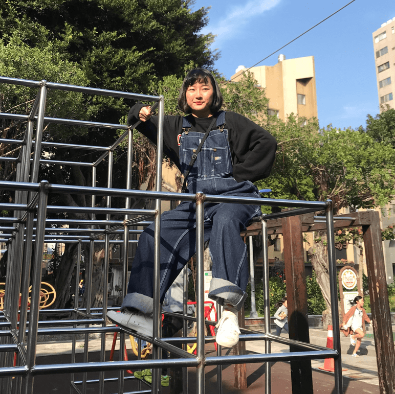

前端
| 個人資訊 | 心得 | |
| 財金四乙 趙翊吟 |
這堂課真的學到很多實用的程式寫法，從HTML到CSS都是以前沒碰過的，看著自己能從無到有把一個網站架設出來，覺得很有成就感，雖然過程中會遇到跑版、格式不如預期等問題， 但做中學真的是學習最快速的方法，也很慶幸自己有修這堂課，讓我在程式的應用與網頁設計上有更深的進步。 |
|
|  | 財金四乙 楊雅惠 |
從期中做一個履歷到現在要能做出一個購物網站，很多時候都還需要再去加強對html跟css的了解，一邊學習一邊實作，還要能夠設計整個畫面跟排版，過程中會覺得好難， 但是還是覺得前端滿有趣的，尤其是最後有做出來得時候真的會很開心！ |
後端
| 個人資訊 | 心得 | |
 |
資管二甲 施品羚 |
這學期學習後端的課程，相比上學期前端的部分比較吃力，但也可以做出很多前端做不到的事情，不過需要考慮的東西也變多了，連接資料庫也不是想像中那麼簡單的。 做專案的時候統整了上課用到的東西，雖然在做的時候困難重重，但最後做出來的時候還是很有成就感的。 我覺得上學期乙班的同學太厲害了，在還沒學資料庫的時候就先學後端了，真心佩服他們。 |
| 資管二甲 柳翔哲 |
網程期末專案讓我們對網程後端課程內容更加熟悉,也讓我們能實戰演練jsp與sql的應用,更對程式邏輯思維與網頁應用融會貫通。 其中我認為最重要的是與組員們的團隊合作,做網頁時雖然會遇到層層阻礙,但透過與組員們的溝通與討論後,就能撥雲霧見青天,順利完成期末專案的設計。 |
|